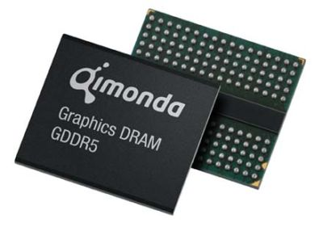

In computer architecture, shared graphics memory refers to a design where the graphics chip does not have its own dedicated memory, and instead shares the main system RAM with the CPU and other components.

This design is used with many integrated graphics solutions to reduce the cost and complexity of the motherboard design, as no additional memory chips are required on the board. There is usually some mechanism (via the BIOS or a jumper setting) to select the amount of system memory to use for graphics, which means that the graphics system can be tailored to only use as much RAM as is actually required, leaving the rest free for applications. A side effect of this is that when some RAM is allocated for graphics, it becomes effectively unavailable for anything else, so an example computer with 512 MiB RAM set up with 64MiB graphics RAM will appear to the operating system and user to only have 448 MiB RAM installed.
computers, most notably the O2/O2+. The memory in these machines is simply one fast pool (2,1 GB/s per second in 1996) shared between system and graphics. Sharing is performed on demand, including pointer redirection communication between main system and graphics subsystem. This is called Unified Memory Architecture (UMA).
An early hybrid system was the Commodore Amiga which could run as a shared memory system, but would load executable code preferentially into non-shared "fast ram" if it was available.
A similar approach that gave similar results is the boost up of graphics u The disadvantage of this design is lower performance because system RAM usually runs slower than dedicated graphics RAM, and there is more contention as the memory bus has to be shared with the rest of the system. It may also cause performance issues with the rest of the system if it is not designed with the fact in mind that some RAM will be 'taken away' by graphics.
Most early personal computers used a shared memory design with graphics hardware sharing memory with the CPU. Such designs saved money as a single bank of DRAM could be used for both display and program. Examples of this include the Apple II computer, the Commodore 64, the Radio Shack Color Computer, the Atari ST, and the Apple Macintosh.
tion was the IBM PC. Graphics display was facilitated by the use of an expansion card with its own memory plugged into an ISA slot.
The first IBM PC to use the SMA was the IBM PCjr, released in 1984. Video memory was shared with the first 128KiB of RAM. The exact size of the video memory could be reconfi A notable excepgured by software to meet the needs of the current program.
sed in some SGi